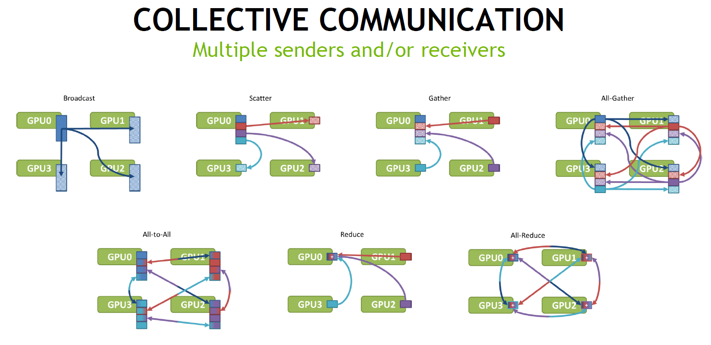
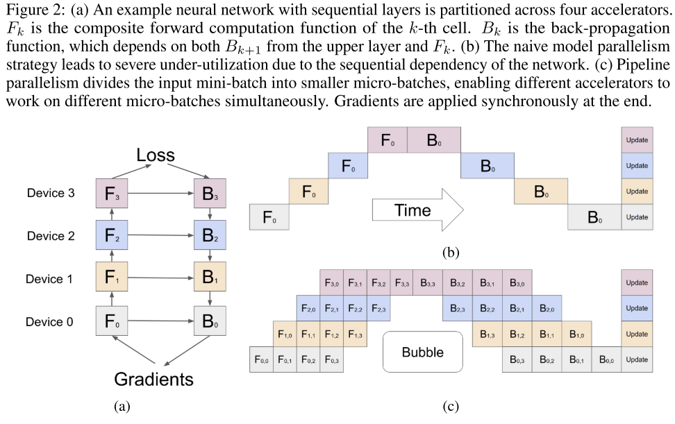
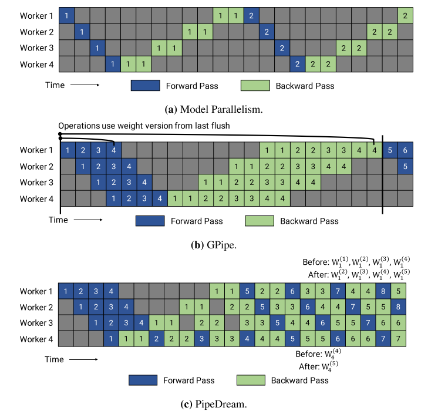
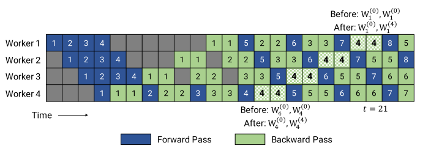
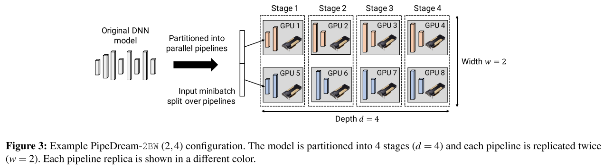
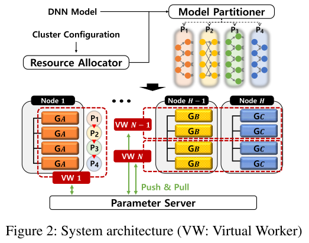
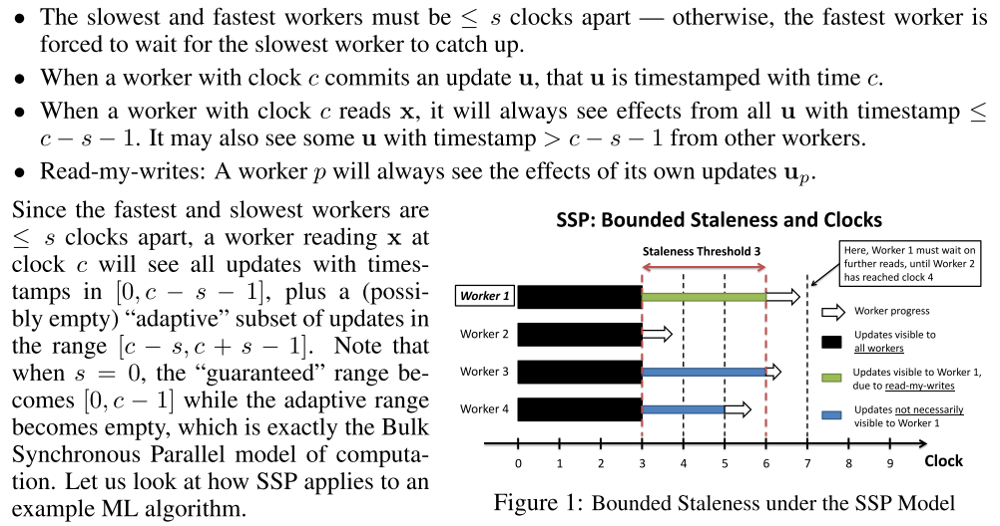

分布式训练技术总结
分布式训练总结
分布式训练方法概述
集合通信
在多GPU训练的深度学习任务中常用到 NCCL（ NVIDIA Collective Communications Library ），NCCL中囊括的几种数据通信原语：Scatter、Broadcast、Reduce、AllReduce、AlltoAll、Gather

同步协议
@todo BSP、ASP(ASync)、SSP
数据并行
@todo 暂略
模型并行
@todo 暂略
混合并行
流水线优化 Pipeline
Pipelining 优化，思路与CPU的指令流水线相似，早在。分布式训练中的流水线“指令”为各种张量的正反向计算任务，backward耗时一般为forward任务的两倍。一般流水线的深度大于1，宽度为1，但在PipeDream-2BW中流水线宽度可为2、4、8等更大的值。本节主要涉及4种流水线优化方法共计5篇论文 [ 3 ] - [ 7 ] ：Gpipe，Pipe Dream及其内存优化版本PipeDream-2BW，基于PS的流水线优化。
- GPipe
论文 [ 3 ] 提出了名为GPipe的Pipeline并行化库，支持任何可以表达为层序列的网络。主要有如下三点贡献：
- Network partition(网络分片)。将一个N层的网络划分成K个partition, 每个partition在单独的TPU上执行，partition之间需要插入一些网络通信操作。
- Pipeline parallelism(流水线并行). Splits a mini-batch to smaller macro-batches. 把CPU里的流水线并发技术用在了深度学习上，主要是把计算和网络通信两种操作，更好地重排列。
- Recomputation(重计算) . Recomputes the forward activations during the backpropagation, in another word, it's gradient checkpointing. 跟OpenAI开源的 梯度检查点Gradient-Checkpointing 一样，只不过GPipe是在TPU上实现的，OpenAI的只能运行在GPU上。

GPipe的工作原理很清晰，每次有若干个micro-batch进入流水线，执行Forward与Backward任务,是所有的Forward任务使用的都是上一轮的weights，但是这个流水线是不连续的，在一个mini-batch的Forward与Backward结束之后，需要flash流水线，更新权重。在Gpipe中，还提及了Recomputation，该思想最早出现在陈天奇发表的论文 [ 15 ] 中，以时间换取空间（Memory），有效地避免Cuda OOM。
- PipeDream & PipeDream-2BW
GPipe在一段时间区间内仅使用同一版本的weight，定期更新。而论文 [ 4 ] [ 5 ] 提出了PipeDream，PipeDream不会定期刷新流水线，而是存储多个weight版本，保证每个micro-batch在执行Forward与Backward任务时使用同一版本的weight，这既增加吞吐量也提高了内存占用。

论文 [ 6 ] 对PipeDream的内存占用做了针对性的优化，提出改进版本PipeDream-2WB（double-buffered weight updates ，下简称2BW）。减少内存占用的同时，还可以避免GPipe中weight更新导致的流水线flush。在2BW中，若流水线为 \(d\;(d > 1)\) 个stage，编号为 \(m\;(m > 1)\) 的micro-batch对应的weight版本为 \(max(\lfloor m/d \rfloor - 1, 0)\) 。

若2BW使用SGD，则更新方式为 \(\begin{equation}W^{(t+1)}=W^{(t)}-v \cdot \nabla f\left(W_{1}^{(t-1)}, \ldots, W_{d}^{(t-1)}\right)\end{equation}\) ，允许使用上一个版本的weight。可见，流水线式的训练方式使用了 \(d\) 个 micro-batch的梯度作平均，这相当于梯度累加，变相提高了mini-batch的size。
此外，对于每一个stage，都做width方向的复制（batch-size的切分），每条流水线都复制成了两份 ，据说对 transformer-style 的模型有利。(With data- parallel updates across replicas of the same stage.）此举为了实现流水线的数据并行？
关于梯度的Recomputation：实现方式参照论文 [ 15 ] ，网络分为 \(d\) 个segment（同stage数量），使用Recomputation的内存占用是 \(\frac {2|W|}{d} + \frac {|A^{total}(b)|}{d}\) （stores output activations at the partition boundaries）。

Q：在partition Algorithm中有一个SEARCH( )函数，用于得出（b，r）两个参数，这个如何实现？
Q：AccPar有无改成流水线的可能呢？比如，这里每个stage宽度w=2，不做数据的复制，而是对layer层次进行划分，交给两个卡计算。这样做有几个潜在的好处，第一，我们划分层次的时候可以更好地规定哪几层放一起组成一个segment（同一个stage），因为AccPar对DP-MP的混合并行组合做了定量分析，每一种type的cost都可以模拟出来，容易刻画每一个stage的cost。第二，可以尝试用AccPar的这种方式实现stage内的细粒度并行，也就是说stage内是细粒度并行的，即类似AccPar的方法，而stage之间还是流水线的方式，Recomputation也可引入。第三，可以引入对Heterogeneity的支持，AccPar中\(\begin{array}{r} \alpha \cdot E_{\mathrm{cp}}\left(p_{i, l}\right)+\alpha \cdot E_{\mathrm{cm}}\left(p_{i, l}\right) =\beta \cdot E_{\mathrm{cp}}\left(p_{j, l}\right)+\beta \cdot E_{\mathrm{cm}}\left(p_{j, l}\right) \end{array}\) ，异构情况下通过 \(\alpha\) 比例的intra-layer任务划分，使得同一层不同卡通信+计算的时间相等（针对异构情况，HetPipe中是另外一种形式的流水线）。
- HetPipe
HetPipe中的3大创新点：
- 通过Virtual Worker（VW）的方式实现数据并行（通过跨节点重组GPU的方式实现数据并行）
- VW使用Pipelined-MP的方式实现提高GPU资源利用率（GPipe和PipeDream已经提出过，但是据作者说，他们是首个在异构GPU平台上实现的）
- WSP：参数同步模型 Wave Synchronous Parallel（核心是两级SSP）

上图是整个系统的训练模式，G1-G4是同一个VW中的4张GPU，每一个VW都保有一份完整的模型副本，以PS的方式进行训练，weight的同步方式使用SSP（Stale Synchronous Parallel）。在一般SSP协议基础上，设置两个层次的阈值：Global Staleness Bound 和 Local Staleness Threshold。
① Global Staleness Bound （记作 \(D\) ）在VW-PS的层次，最快的VW与最慢的VW之间允许存在 \(D\) 个clock的差距（此处1个clock代表一个wave，全局时钟为 \(c_{global}\)，它代表所有VW中最慢的本地时钟 \(c_{local}\) ，所以 \(D\) 代表的是最快最慢两个本地之中的最大差值，该值人为设定）。当本地时钟 \(c_{local} \ge D+1\) 时，必须使用来自wave \([0,c-D-1]\) 或更加新的weight。
② Local Staleness Threshold（记作\(s_{local}\)），指示的是VW中可超前执行的batch。当训练过程触及Global Staleness Bound时，需要从PS上pull最新的weight，然后继续训练。即，若最慢的VW还未将wave \(c-D\) 的更新push给PS，那么最快的VW可以超前执行 \(s_{local}\) 个batch（假设一个中包含 \(N_m\) 个batch，那么\(s_{local} = N_m - 1\)）。
综合①②，全局的Staleness记作 \(s_{global}\) ，mini_batch_id记作 \(p\) ，当 \(p > (D + 1) \times (s_local + 1) + s_{local}\) 时，mini_batch p 必须使用来自其他VW，在区间 \([0,p-s_{global}-1]\) 的weight。其中 \(s_{global} = (D + 1) \times (s_local + 1) + s_{local} - 1\) 。
PS：都是已有的东西，连证明过程也是在SSP的基础上推导。

张量划分 Tensor Partitioning / Slicing
@todo AccPar、FlexFlow、TensorOpt
内存优化
论文 [ 15 ] 。
- Capuchin
论文 [ 16 ] 提出 Capuchin（a tensor-based GPU memory management module ），使用“tensor eviction/prefetching and recomputation”来减少内存占用。依据来源于一个Observation，即在训练过程中对tensor的访问是有规律的，由此可以基于第一轮迭代的访问记录来实施内存的优化时间与方法。（ when and how to perform memory optimization）
节省内存小妙招：内存交换、重计算、低精度浮点...
框架
MindScope
PipeDream
领域学者
李沐
亚马逊首席科学家 、MXNet
陈天齐
TVM、MXNet、XGBoost
贾杨清
Caffe、Google大脑科学家
Eric Xing（邢波）
Petuum
褚晓文(Xiaowen Chu) HKBU
李丹、王帅、耿金坤（清华-stanford）
Alex Aiken、jiazhihao 、 Deepak Narayanan 、Matei Zaharia (pipedream、flexflow)
参考文献
- Jia Z, Lin S, Qi C R, et al. Exploring hidden dimensions in parallelizing convolutional neural networks[J]. arXiv preprint arXiv:1802.04924, 2018.
- Jia Z, Zaharia M, Aiken A. Beyond data and model parallelism for deep neural networks[J]. arXiv preprint arXiv:1807.05358, 2018.
- Huang Y, Cheng Y, Bapna A, et al. Gpipe: Efficient training of giant neural networks using pipeline parallelism[C]//Advances in neural information processing systems. 2019: 103-112.
- Harlap A, Narayanan D, Phanishayee A, et al. Pipedream: Fast and efficient pipeline parallel dnn training[J]. arXiv preprint arXiv:1806.03377, 2018.
- Narayanan D, Harlap A, Phanishayee A, et al. PipeDream: generalized pipeline parallelism for DNN training[C]//Proceedings of the 27th ACM Symposium on Operating Systems Principles. 2019: 1-15.
- Narayanan D, Phanishayee A, Shi K, et al. Memory-Efficient Pipeline-Parallel DNN Training[J]. arXiv preprint arXiv:2006.09503, 2020.
- Park J H, Yun G, Yi C M, et al. HetPipe: Enabling Large DNN Training on (Whimpy) Heterogeneous GPU Clusters through Integration of Pipelined Model Parallelism and Data Parallelism[J]. arXiv preprint arXiv:2005.14038, 2020.
- Cai Z, Ma K, Yan X, et al. TensorOpt: Exploring the Tradeoffs in Distributed DNN Training with Auto-Parallelism[J]. arXiv preprint arXiv:2004.10856, 2020.
- Geng J, Li D, Wang S. Fela: Incorporating Flexible Parallelism and Elastic Tuning to Accelerate Large-Scale DML[C]//2020 IEEE 36th International Conference on Data Engineering (ICDE). IEEE, 2020: 1393-1404.
- Song L, Chen F, Zhuo Y, et al. AccPar: Tensor Partitioning for Heterogeneous Deep Learning Accelerators[C]//2020 IEEE International Symposium on High Performance Computer Architecture (HPCA). IEEE, 2020: 342-355.
- Wang M, Huang C, Li J. Supporting very large models using automatic dataflow graph partitioning[C]//Proceedings of the Fourteenth EuroSys Conference 2019. 2019: 1-17.
- Band N. MemFlow: Memory-Aware Distributed Deep Learning[C]//Proceedings of the 2020 ACM SIGMOD International Conference on Management of Data. 2020: 2883-2885.
- Luo Q, He J, Zhuo Y, et al. Prague: High-Performance Heterogeneity-Aware Asynchronous Decentralized Training[C]//Proceedings of the Twenty-Fifth International Conference on Architectural Support for Programming Languages and Operating Systems. 2020: 401-416.
- Addanki R, Venkatakrishnan S B, Gupta S, et al. Placeto: Learning generalizable device placement algorithms for distributed machine learning[J]. arXiv preprint arXiv:1906.08879, 2019.
- Chen T, Xu B, Zhang C, et al. Training deep nets with sublinear memory cost[J]. arXiv preprint arXiv:1604.06174, 2016.
- Peng X, Shi X, Dai H, et al. Capuchin: Tensor-based GPU Memory Management for Deep Learning[C]//Proceedings of the Twenty-Fifth International Conference on Architectural Support for Programming Languages and Operating Systems. 2020: 891-905.
本博客所有文章除特别声明外，均采用 CC BY-SA 4.0 协议 ，转载请注明出处！